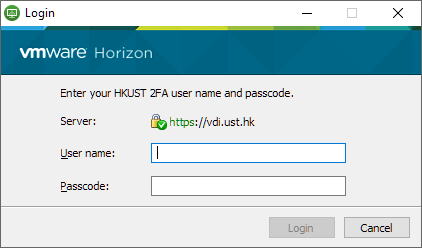
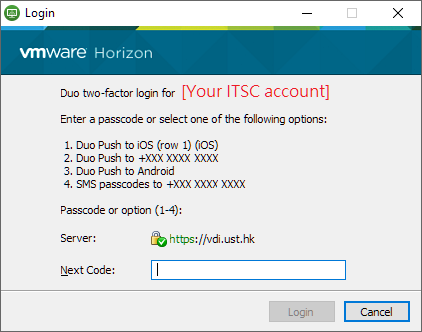

The Main Focus of this Lab
- In this lab:
- You explore how to use variables and loops to generate random graphical patterns
What You Will Learn in This Lab
- In this lab, you will gain experience in the following areas:
Topic Computer Science/ Programming Concept Writing Python programs Using IDLE to build Python programs Writing your first Python program Showing text output Using print()Storing things Using variables Using the turtle graphics module Writing text using turtle.write()Drawing shapes by moving the turtle, using turtle.forward(),turtle.left(),turtle.right(),turtle.goto(), etc.Changing pen width and colour using turtle.width(),turtle.fillcolor(), etc.Repeating things using loops Experiencing while loops ( while ...:)Random number generation Getting random values using random.choice()
Overview
- This lab gives you experience with some of the things we have looked at in the lectures
- You are not expected to have prior programming experience for this lab
- We start with a single line of code, then we achieve a similar output in different ways
- Next, we create a program that has only one line
- Then we will draw using turtle graphics
- In the lectures, you have learned about how to draw different shapes using turtle graphics
- By refining the code, you can create interesting works of art
Lab Content
- 1. Getting Started
- 1.1. Activating your CSD account
- 1.2. Using IDLE
- 2. Hello World in the Shell
- 3. Hello World in a Program
- 4. Turtle Graphics
- 4.1. Writing "Hello World" using the turtle
- 4.2. Drawing a rectangle
- 4.3. Drawing with relative position
- 4.4. Setting pen and fill colors
- 4.5. Using other shapes
- 4.6. Using while loops
- 4.7. Indentation and dedentation
- 4.8. Using random color
- 4.9. Some example results of using a loop
- Video locations
Lab Procedure
1. Getting Started
Video for Getting Started
Note: The video is using Python 3.8. And in this semester, you should use Python 3.9 instead
That means you should find "IDLE (Python 3.9 64-bit)" Instead
1.1 Activating your CSD account
- After having a CSD account, you can get access to course webpage when you are outside the Campus
- If you haven't done so you need to activate the account through the following link:
https://password.cse.ust.hk:8443/pass.html
- For detailed instructions see the last few slides of the Course Details notes
1.2 Using IDLE
- Here are some ways you can use IDLE
- Please click the following buttons to see the instructions in other platforms:
Using IDLE in a Windows 10 machine
- To use IDLE in a Windows 10 machine, you can go to the start menu, scroll down to see "Python 3.9" folder, like this:

- Alternatively, you can type "Python 3.9" on the search bar of the start menu
- Run IDLE by clicking on the IDLE icon
- After running IDLE you can see the IDLE Python shell, like this:

Click to see the image in full size
Using IDLE in a Windows 11 machine
- To use IDLE in a Windows 11 machine you can click the search button (i.e., the magnifying glass icon) on the menu bar
- Type "IDLE" on the search bar, like this:
- Run IDLE by clicking on the IDLE icon
- After running IDLE you can see the IDLE Python shell, like this:
Click to see the image in full size
{kind=link}
Using IDLE in a Mac machine
-
Video for Using IDLE in a Mac machine
- To use IDLE in Mac machine you can click on the Launchpad:
- Find the IDLE button and click on the IDLE icon
- Please do not choose the Python Launcher

Click to see the image in full size - After running IDLE you can see the IDLE Python shell, like this:

Click to see the image in full size
{kind=link}
Using IDLE in the ITSC Virtual Barn
- Alternatively, you can use Python IDLE in the ITSC Virtual Barn
- The Virtual Barn is available anytime via the Internet
- You could do this anywhere in campus, and you can access it using your Mac/PC computers, tablets and mobile devices
- The instructions below are for Windows machine, however, the instructions will be similar in different devices e.g. Mac, tablets and mobile devices
- To use the Virtual Barn in a Windows machine, follow these steps:
- In the Start Menu, go to
VMWare » VMWare Horizon Client - In the VMware Horizon Client window, if you cannot see
vdi.ust.hkalready shown, simply chooseAdd Server
Type
vdi.ust.hkas the name of the Connection Server - Log in using your ITSC username/password

- Please choose your the way to do 2FA (2 Factor Authentication), or enter the passcode in your Duo Security Mobile App

- Choose the Programming Software

- After waiting for a while, you will see the Windows desktop. Go to the Start Menu and look for folder
Python 3.9in Start Menu, then executeIDLE (Python 3.9 64-bit).
- In the Start Menu, go to
- You may install VMWare Horizon Client and access Virtual Barn on your own devices
- To know more about the ITSC Virtual Barn, you can refer to this page
2. Hello World in the Shell
Video for Hello World in the Shell
Note: The video shown is using Python 3.8. And in this semester, you will use Python 3.9 instead
- Lines of code can be typed one by one into the shell
- After typing each line, the result will be instantly shown
- You can see >>>in the shell, this is called the prompt
- Inside the shell, you can try out different Python commands interactively by typing the commands at the prompt.
- For example:
print("Hello World!")
print ("Hello World!")
PRINT("Hello World!")
print( "Hello World!" )
print(" Hello World! ")word1 = "Hello" word2 = "World" exclamation = "!" print(word1, word2, exclamation)
3. Hello World in a Program
Video for Hello World in a Program
- Typing lines of code into the shell again and again can be troublesome
- When you put the lines together in a single file, it is a program
- The program can be run again and again
- To learn programming, most computer courses start with the
Hello Worldprogram - This is a very simple program that shows the words "Hello World!" on the screen
- Let's make our own
Hello Worldprogram - In IDLE, you can create a new Python program by selecting
File » New Filefrom the menu: - Copy or type in the following line into the file:
print("Hello World!") - In IDLE, you can save the file by selecting
File » Save as ...from the menu - Save the above code to a file with the name "hello_world.py"
- If you forget ".py" IDLE will add it for you
- After you finish entering your program code you can run your program
- Run the program by selecting
Run » Run Module: - The program will be run in the Python shell
- You will see the words being displayed:

Click to see the image in full size
4. Turtle Graphics
Video for Turtle Graphics
4.1. Writing "Hello World" using the turtle
- You have had an introduction to turtle graphics in the lectures
- Now create a new file "turtle_graphics.py"
- Copy the following code into the file:
import turtle turtle.write("Hello World!") turtle.done() - Run it to see the words being shown in the turtle world
4.2. Drawing a rectangle
- In the lectures, you learned about drawing different shapes, such as rectangles and circles, using the turtle
- We are going to draw a rectangle around the words "Hello World!"
- To draw the rectangle you need to ask the turtle to "go to" different positions i.e.
turtle.goto( x , y )
- Remember that
(0, 0)is the centre of the turtle window - The diagram below shows the coordinates of the rectangle:
- The turtle will draw a line between the points it visits
- If you do not want to leave a line in certain places, you need to tell the turtle to raise the pen off the page:
turtle.up()
- The opposite (tell the turtle to put the pen down on to the page) is
turtle.down() - You can adjust the line thickness by:
turtle.width( pixels )
- You can also change the line color by:
turtle.color( color_name )
- You should do the sequence of turtle graphics commands after
import turtleand beforeturtle.done():
click to see the image in full size
{kind=link}
import turtle # code for drawing with turtle turtle.write("Hello World!") # writing with turtle turtle.up() # raise the pen up turtle.goto(-100,50) # go to the position (-100, 50) turtle.down() # put the pen down turtle.goto(-100,-50) # go to the position (-100, -50) ...some code... # go to the next point for 3 more times turtle.done()
4.3. Drawing with relative position
- If you want to move the above rectangle to a different position, you would need to modify all the x and y values used in the goto() instructions
- However, if we are clever, we can write our code in a different way
- Then we won't need to change many lines of code if we make a second rectangle
- To do this we use
turtle.forward()instead ofturtle.goto() - In this way the drawing will be relative to your starting position
- Using
turtle.forward(), we will draw a rectangle of random size, starting at any random place - We are going to make a new program, so you need to do
File » New Windowagain - Always remember to type the following lines at the top:
import turtle
- And this line at the bottom:
turtle.done()
- Lines of code for drawing the turtle graphics will be added in betwen these two lines:
import turtle
...some code... # your code goes here
turtle.done()
random.randint() to get 2 values for x and the y positions of the starting pointimport random
random_x = random.randint( -300 , 300 ) random_y = random.randint( -300 , 300 ) turtle.goto(random_x, random_y)
turtle.left( random_angle )or
turtle.right( random_angle )
turtle.forward( random_width )
turtle.left(90)
turtle.forward( random_height )
turtle.left(90)
...some code... # go forward and turn left 2 more timesrandom_width and random_height are variables which have to be created by you first{kind=link}
4.4. Setting pen and fill colors
- You can set the pen colour and fill colour of the rectangle:
turtle.pencolor( pen_color_name )
turtle.fillcolor( fill_color_name )
orturtle.color( pen_color_name, fill_color_name )
- Pen colour refers to the colour used to draw the boundary of the shape
- Fill colour refers to the colour used to fill the interior of the shape
- A list of colours together with their names you can use is shown here: The Names of All Python Turtle Graphics Colours
- Add the following line before drawing the rectangle:
turtle.begin_fill()
- Add the following line after drawing the rectangle:
turtle.end_fill()
- You will have a rectangle filled with the fill color you specified earlier
- Here are 3 examples:
{kind=link}
4.5. Using other shapes
- You may also think about how you can draw circles instead of rectangles using the following commands:
turtle.circle( radius )
- You can also draw an arc (rather than a full circle), if you give the degree of the arc
turtle.circle( radius , degree )
{kind=link}
4.6. Using while loops
- If you want to draw 20 rectangles or circles, then you need to copy the lines of code 20 times
- Imagine how long the length of the program will be if you want to have hundreds of rectangles, circles, etc!
- You can use the
whileloop, which you will learn later in the lecture - In this lab, you will try to use it anyway by following the instructions here
- Here is the
whileloop:while ... condition ...: ... statement(s) ...
- All the statements (lines of code) that will be done repeatedly inside the while loop have to be indented by the same number of character spaces
- For example, we can use a while loop to draw the rectangles or circles at random repeatedly for 5 times.
- Add these lines after the import statements, before the turtle commands:
num_of_loops = 0
while num_of_loops < 5: # Run the loop five times, i.e. 0, 1, 2, 3, 4
num_of_loops = num_of_loops + 1
4.7. Indentation and Dedentation
- Here comes the most important step. We need to tell Python what to repeat, using whitespace in front of the lines we want to repeat. This is called indentation.
- Select all the lines after the while statement, up to the last line before turtle.done(). Then select Format » Indent Region.
- Format » Indent Region is good for moving the large block "inward"
- A simple alternative is to select the text you want to indent and press the Tab key on your keyboard
- To do the opposite, you can use Format » Dedent Region to move "outward"
- We need to tell Python what to repeat, using whitespace in front of the lines we want to repeat. This is called indentation.
- We need to make sure that the content of the while loop is indented.
- So finally your program structure should look like this:
import turtle import random num_of_loops = 0 while num_of_loops < 5: # Run the loop five times, i.e. 0, 1, 2, 3, 4 # In each loop, draw a rectangle/circle in the specified color # Those lines of code have to be indented by the same number of character spaces # because they are inside the while loop turtle.color("blue", "yellow") # Set the color of the rectangle/circle ...some code... # Add code to draw a rectangle (or perhaps a circle, if you prefer) num_of_loops = num_of_loops + 1 turtle.done()
4.8. Using random color
- Using a single color for so many shapes may be quite boring
- Let's introduce a bit of randomness to the color too
- To do this, we need to set up a list of colors (variable name
colors) for Python to "pick" from:
colors = ["Royal Blue", "Pale Green", "Gold", "Rosy Brown", "Coral", "Orchid"]
random_color = random.choice(colors)
turtle.color("blue", random_color)
random.choice(a list name) will select one of the item in the given list randomlyrandom_color instead of the actual color, we do not put the quotes around this name4.9. Some example results of using a loop
- By drawing more rectangles/circles in different colors using a while loop, you can create interesting graphics
{kind=link}
{kind=link}
Submission
- You don't need to submit this work
- However, it's a good idea to keep a copy of your work for your own reference
- For example, save a copy to your USB drive, or send a copy to yourself via email